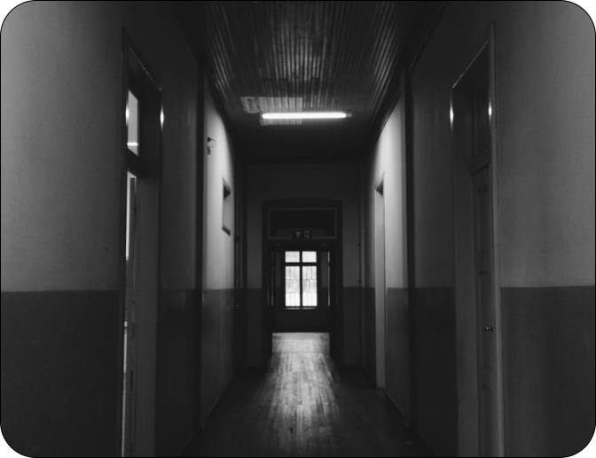
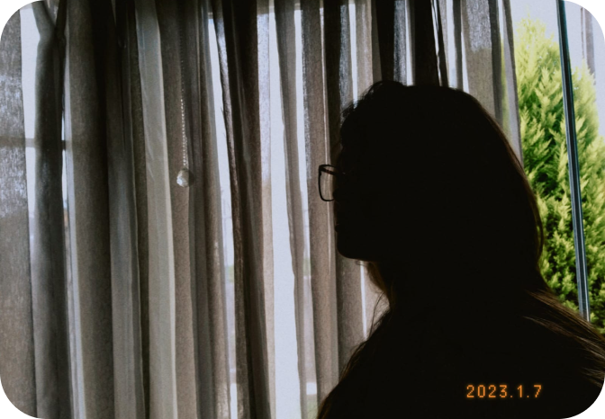

Página de Fotos
Catálogo de Edições
Sobre o Kos7Phto
Kos7Phto foi criado no dia 18 de setembro de 2022, por Kamila Rost Pelek,
na intenção de mostrar para as pessoas,
o mundo através dos seus olhos.
Tudo começou com apenas uma conta no Instagram,
com poucos seguidores, e poucas curtidas.
Mas sua paixão por fotografia vai além de números.

Quem é Kos7?
Kos7 é a lente pelas quais essas fotos foram tiradas. Kamila Rost Pelek, uma Paranaense de 15 anos,
que desde criança ama fotos.
Kamila diz que, suas fotos não são profissionais e não quer que isso aconteça, pelo menos por agora.
Kamila fala que fotografia é a sua diversão, e que nao quer que isso seja visto como profissionalismo
para não perder a essência. Mas esta aberta à mudanças, quem sabe no futuro.
Por que "Kos7"?
Kamila queria usar algum de seus sobrenomes na sua identificação. Então escolheu o "Rost",
trocou o R pelo K, que está no seu nome e seu segundo sobrenome, e trocou o T pelo 7, que é seu número
da sorte.
Mas como tudo na vida, teve várias alterações antes, como essas: Kost¹¹, Kost7, e enfim chegar no Kos7.
